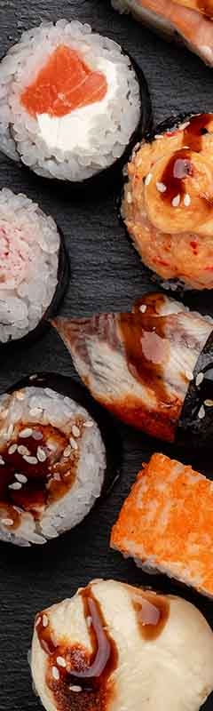
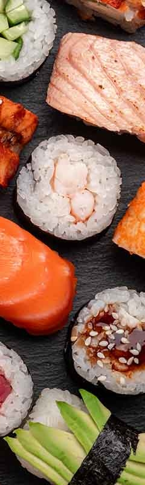

Benvenuti da
Sdrogo Sushi, il ristorante giapponese di Epicode
Dove la Tradizione Incontra l'Innovazione Benvenuti su SushiCode, il primo ristorante di sushi dove l'arte culinaria giapponese si fonde con la passione per il coding. Qui, ogni piatto è un'esperienza unica che celebra la precisione e la creatività, proprio come nel mondo della programmazione. Oltre al nostro delizioso sushi, offriamo un ambiente unico dove gli appassionati di tecnologia possono sentirsi a casa. Connetti il tuo laptop al nostro Wi-Fi ultraveloce e goditi il sushi mentre lavori sui tuoi progetti o partecipi ai nostri eventi di coding e hackathon.